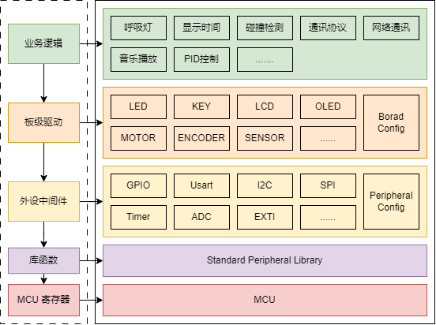

<!DOCTYPE lake>
<h2 data-lake-id="lsAoV" id="lsAoV"><span data-lake-id="u4e8fd978" id="u4e8fd978">学习目标</span></h2><ul list="ub2642c37"><li data-lake-id="u804f7cb4" fid="ua99e56b5" id="u804f7cb4"><span data-lake-id="u19130226" id="u19130226">理解抽象化思维</span></li><li data-lake-id="uff16e05a" fid="ua99e56b5" id="uff16e05a"><span data-lake-id="uc6688232" id="uc6688232">理解分层思维</span></li></ul><h2 data-lake-id="LKmtb" id="LKmtb"><span data-lake-id="u0688c8b0" id="u0688c8b0">学习内容</span></h2><h3 data-lake-id="dY2E6" id="dY2E6"><span data-lake-id="ua6c3eeb7" id="ua6c3eeb7">架构分层</span></h3><p data-lake-id="u314ffd9e" id="u314ffd9e"></p><p data-lake-id="u532b0214" id="u532b0214"><span data-lake-id="u60bb34de" id="u60bb34de">从开发的角度而言，我们大致分为几层：</span></p><ul list="ue8772c49"><li data-lake-id="uf5c2d711" fid="ua708839e" id="uf5c2d711"><span data-lake-id="u40419d3c" id="u40419d3c">业务逻辑层</span></li><li data-lake-id="u2499226a" fid="ua708839e" id="u2499226a"><span data-lake-id="u3f835289" id="u3f835289">板级驱动层</span></li><li data-lake-id="ua7da1fbb" fid="ua708839e" id="ua7da1fbb"><span data-lake-id="uef74c0a4" id="uef74c0a4">外设中间层</span></li><li data-lake-id="u2c495d85" fid="ua708839e" id="u2c495d85"><span data-lake-id="u56d38190" id="u56d38190">芯片访问层</span></li></ul><h3 data-lake-id="YIgif" id="YIgif"><span data-lake-id="u948abe93" id="u948abe93">业务逻辑层</span></h3><p data-lake-id="u72b4179c" id="u72b4179c"><span data-lake-id="ua889b85b" id="ua889b85b">主要处理项目中的具体业务。例如你的开发板中，有个需求，需要实现呼吸灯，呼吸灯如何闪烁，闪烁时间间隔等等这些，都属于业务逻辑，而业务逻辑实现需要通过调度硬件驱动来实现。</span></p><h3 data-lake-id="MXNnW" id="MXNnW"><span data-lake-id="u00cdfd68" id="u00cdfd68">BSP板级驱动</span></h3><p data-lake-id="u06d9eff4" id="u06d9eff4"><span data-lake-id="u831e8d63" id="u831e8d63">板级驱动，首先是应用于具体的开发板上，开发板在设计之初，就已经规划好了硬件开发板上有什么功能。功能硬件和芯片的关系已经建立好了。开发板上的功能性驱动，需要使用到外设来实现。</span></p><h3 data-lake-id="zndPI" id="zndPI"><span data-lake-id="u7701d928" id="u7701d928">外设中间件</span></h3><p data-lake-id="u201b3d29" id="u201b3d29"><span data-lake-id="ua5561a09" id="ua5561a09">外设中间件是一个封装，理论上是可以不要的。之所以存在，是在于可以起到硬件接口统一标准化的策略。外设中间件是对具体芯片控制的封装。下层可以是对应芯片提供的标准库，或者其他实现。在此基础上进行泛化，拓展到不同平台上。</span></p><p data-lake-id="u776ed2c7" id="u776ed2c7"><span data-lake-id="u90480989" id="u90480989">​</span><br/></p><h2 data-lake-id="nrOro" id="nrOro"><span data-lake-id="ub5bfcf38" id="ub5bfcf38">体会</span></h2><ul list="ua80d19af"><li data-lake-id="u4329cdd8" fid="ua7a641af" id="u4329cdd8"><span data-lake-id="u54650815" id="u54650815">相同芯片配置不同引脚</span></li><li data-lake-id="u915d5b37" fid="ua7a641af" id="u915d5b37"><span data-lake-id="u3e1bb722" id="u3e1bb722">不同芯片实现相同接口。</span></li></ul><p data-lake-id="u37de5e96" id="u37de5e96"><br/></p>